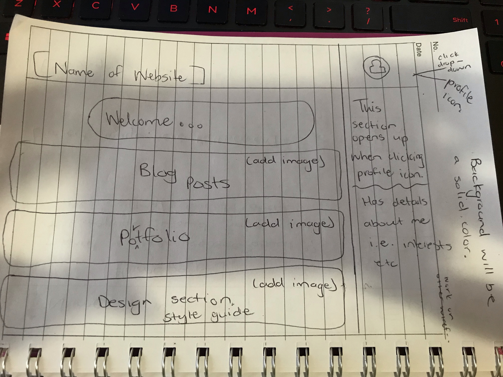
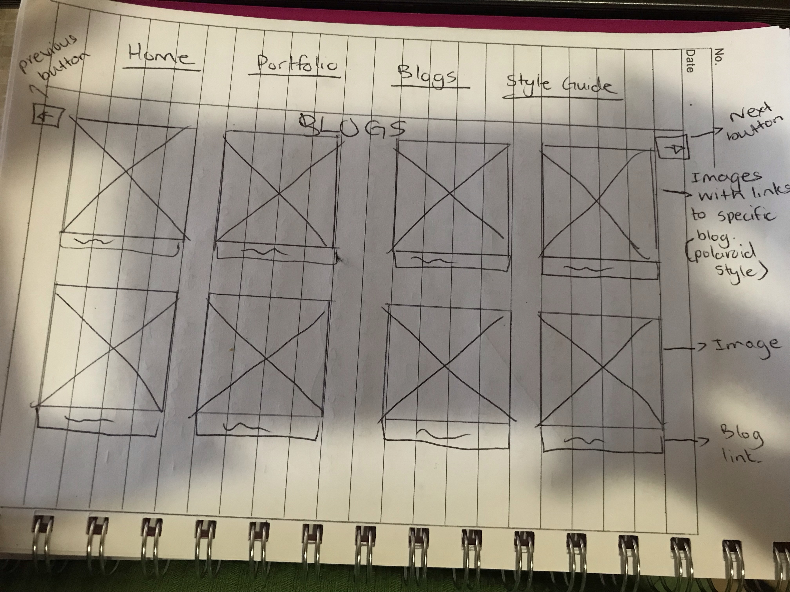
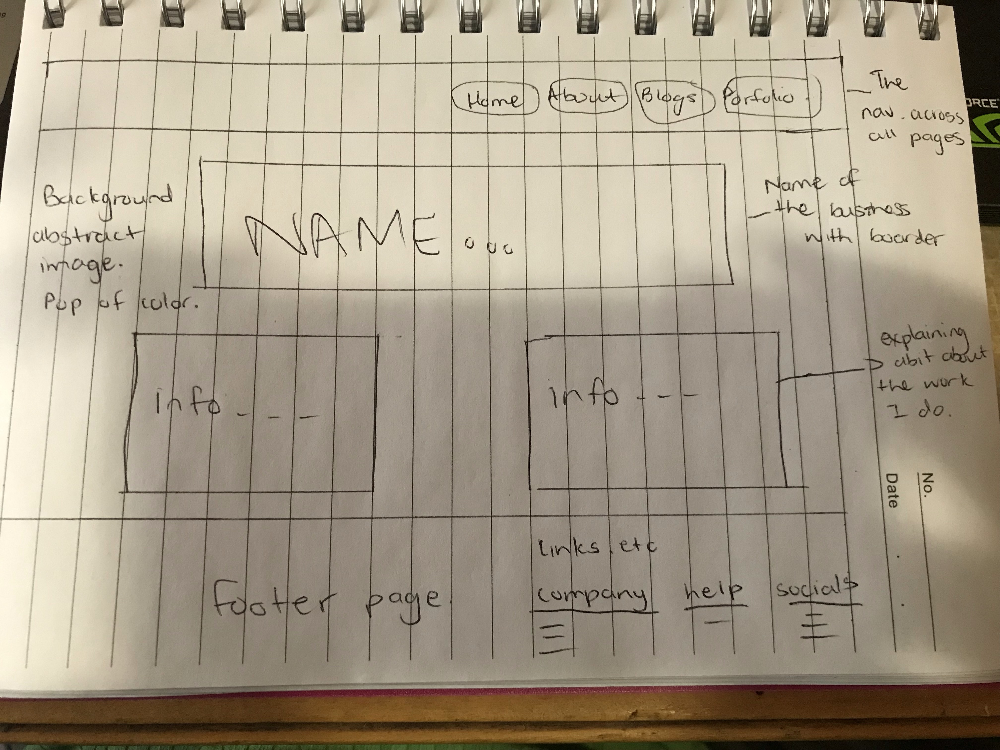
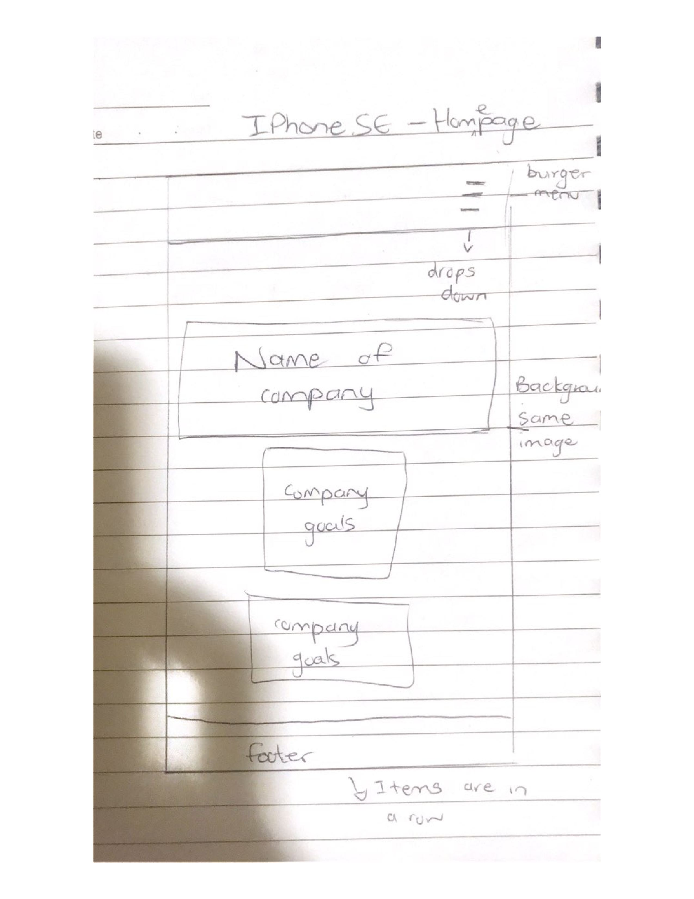
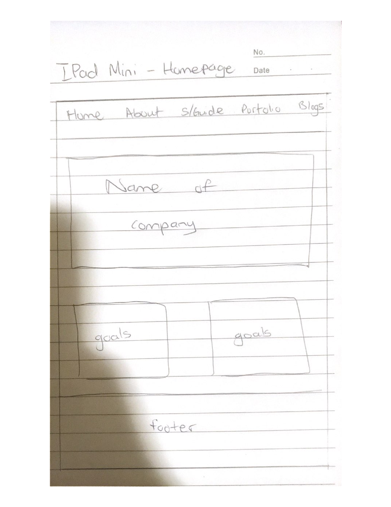

I have added new wireframes below that show the structure of the website and its responsiveness that caters to two more form factors. I chose to do responsiveness for the iPhone SE and the iPad Mini and this was done with correspondance with the inspect function on my PC.
With my intention of wanting something that is bold and draws attention, i decided to go with an abstract background image with a bold red and subtle browns. I then included browns and nude solid colors to highlight text and some images. This also supports UI readability because if i had left the text on the abstract background it would have been difficult to read. I became aware of the fact that it becomes frustrating to read my blogs due to the spaces inbetween the words, however i was not successful in my attempt to fix this as i had set the text-alignment to justify because everything else did not look pleasant to read.
The color palette below shows the colors that I used for my website. With these colors i wanted to give a warm and bold feel and appearance to the site. I also wanted a traditional and simple site, something that a wide audience could identify with, be it young or old. I felt the traditional and simple look may evoke feelings of trust in the services which the business provides and in turn the business gains clients The website caters to all audiences as it helps start-up and small businesses with their branding and anyone can have a small business. Usually the background color of websites is white or a solid color, I tried switching this up for mine and do something different and I am hoping it works.
The font that i used for the blogs and the headings was Satisfy-Regular which i felt gave off a formal and traditional feel. The look of the business is a timeless classic with a touch of a unique modern feel and i wanted this to reflect through the chosen font, color palatte and structure. My blog section also resembles a modern touch because of the styling of the different blogs. I wanted to create a fun element and not bore the user with all the reading.
This was the initial homepage
This is the Blog page wireframe
This is the current Landing page
Responsiveness for iPhone SE
Responsiveness for iPad Mini
Chosen Color Palette